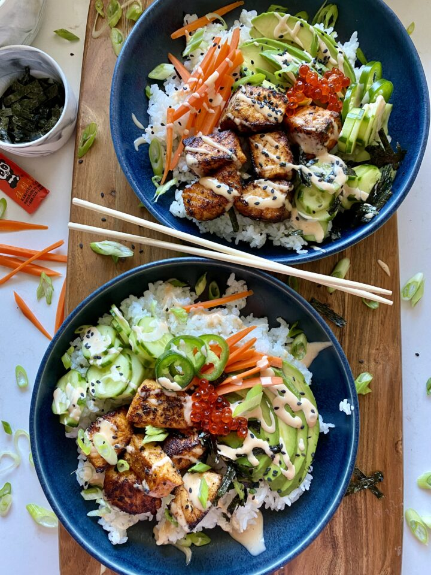

crispy spicy salmon bowls

No need to track down sushi grade salmon. We are cubing, seasoning and cooking our salmon pieces in under 15 minutes and they will taste better than restaurant bought sushi bowls.
Ingredients
Rice:
- 1 cup sushi rice, uncooked
- 2 tbs unseasoned rice vinegar
- 1 tsp sugar
- 1/2 tsp salt
Salmon:
- 1/2 tsp salt
- salt, garlic powder, onion powder, chili powder, paprika + dried oregano to taste
- 1/4 cup sesame oil (divided)
Spicy mayo:
- 1/2 cup kewpie mayo
- 2 tbs Sriracha sauce
- 1 tbs honey
Assembly:
- 1 large avocado, sliced
- 1 large carrot, juliened
- 3 persian cucumbers, sliced
- 2 scallions, diced
- 4 oz salmon caviar
- 1 nori sheet, sliced thin strips
- 1 tbs black sesame seeds
Instructions
- Cook your rice according to package instructions. In a small pot, warm your rice vinegar, sugar and salt until just about to boil and then remove from the burner. Transfer your COOKED rice to a platter, evenly pour the mixture on top and fluff with a fork.
Rice:
- Remove the skin from your salmon. Pat dry the fish with a paper towel. Cube the salmon into 1.5 inch chunks. Season the pieces with the seasonings – generously. Toss them to spread it all over the pieces.
- In a large skillet, working in 2 batches, heat 2 tbs sesame oil on medium high. Add HALF the salmon and cook for 3-4 minutes per side, gently turning. Internal temperature of salmon should be no less than 145°F. Transfer cooked salmon to paper towel lined platter. Wipe down your pan clean and repeat with remaining oil and salmon.
Salmon:
- Whisk all of the ingredients together until smooth.
Spicy mayo:
Notes
You can use any rice you have on hand. You can also skip the vinegar mixture step. Dish will still be delicious.
You can sub in any cooking oil for the sesame oil.
NUTRITION
Calories: 974kcal | Carbohydrates: 52g | Protein: 57g | Fat: 60g |
Saturated Fat: 9g | Polyunsaturated Fat: 26g | Monounsaturated Fat: 21g | Trans Fat: 1g | Cholesterol: 243mg | Sodium: 787mg | Potassium: 1616mg | Fiber: 6g | Sugar: 8g | Vitamin A: 3389IU | Vitamin C: 18mg | Calcium: 85mg | Iron: 4mg